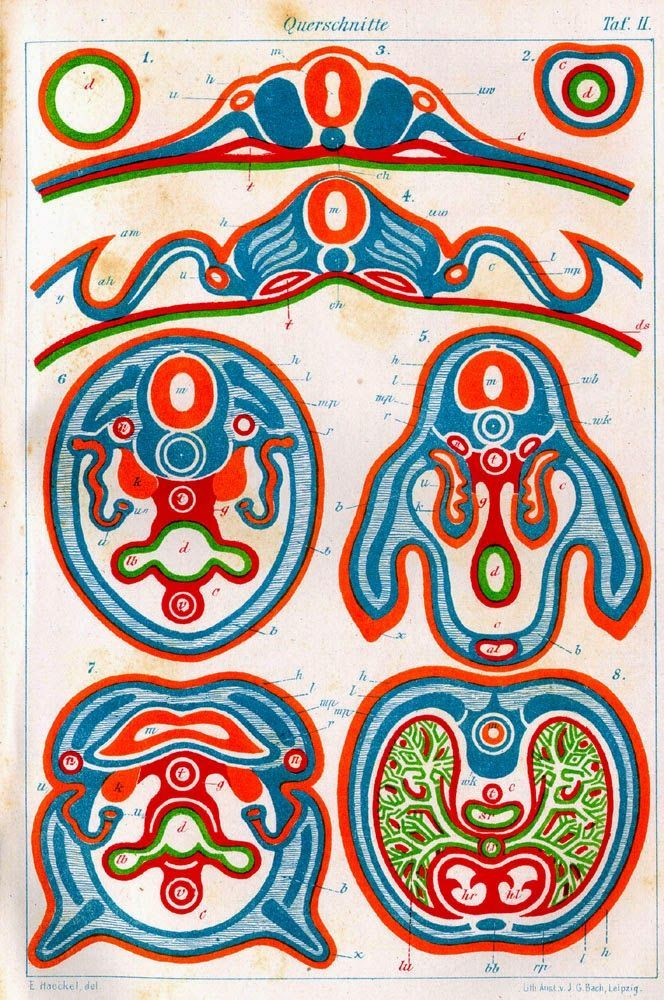

Fund the first
decisive experiment
Primordia is a fast, trust-based microgrant layer below traditional grants. We fund the $1,000–$3,000 killer experiment a builder runs on a community-lab bench. The one that shows whether an idea is real.

PL.001 · REG 1690An organ or tissue in its earliest recognizable stage of development.
Primordia is a collection of those beginnings. Many small, early experiments that can grow into something bigger.
Move ideas out of notebooks and onto the bench
Primordia funds focused biology experiments in community labs and other compliant spaces. Small, fast grants. A simple structure for sharing lab notes, results, and the story behind them.
We lower the activation energy of starting. Enough money for reagents and bench time. Enough structure to turn a loose idea into a documented result.
Five stages, one cycle
Built for experiments that fit inside a few months and a micro-budget.
Apply with a concrete experiment
Propose a focused experiment you can run in a community lab or other compliant space within a few months.
Review & selection
Applications are read by a panel of community-lab leaders and practitioners who know the realities of bench work.
Microgrant & lab access
Selected teams receive a flexible microgrant for reagents, consumables, equipment, and lab membership or bench fees.
Lab notes & updates
Grantees share short public updates during the grant period, building an open portfolio of progress in real time.
Showcase & next steps
At the end of the cycle, projects share results in a public session and a written summary. The start of what comes next.
Seeding the next wave of community biotech
Each of these started as an early experiment on a community bench. Proof of what small beginnings become.
Our first cohort, selected from 169 applications
Seven projects across six countries. Climate biotech, wound healing, DNA synthesis, mitochondrial therapy, protein design, single-cell platforms, and histology automation.
Bring an experiment
The grant is the starting point. Bring a concrete first experiment, or help fund one for someone who has it.